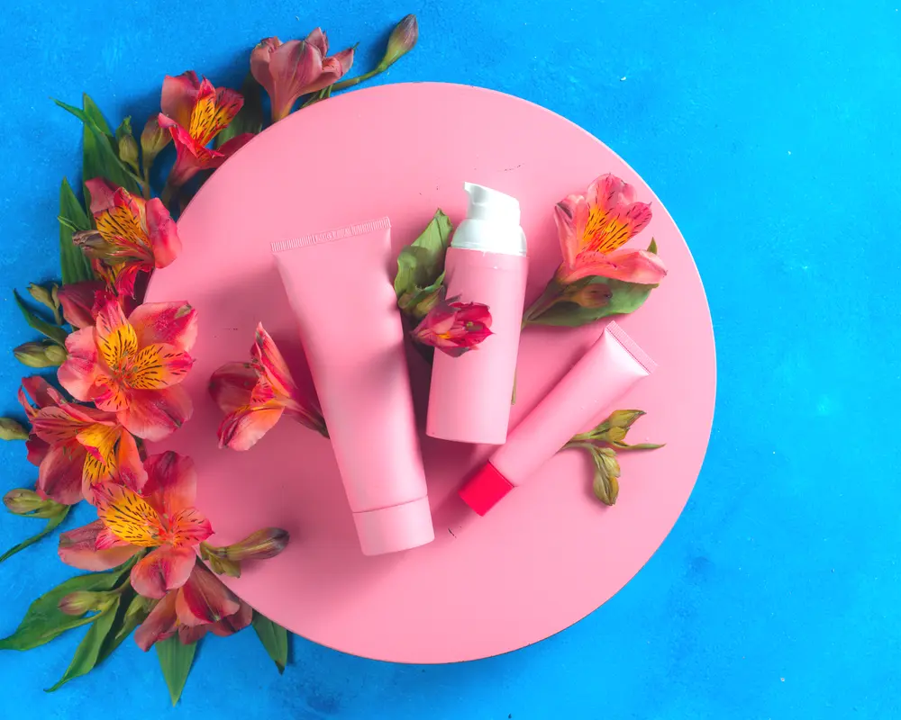

Getting a Treatment the Same Day as Your Consultation
Yes, you can often get a treatment on the same day as your consultation. It is common for quick things like wrinkle relaxers. But it is never guaranteed. It depends on the treatment, the provider's schedule, and what they learn about you in that visit. The point of the consult is to make a safe plan first, not to rush you into a chair.

Think of the consultation as step one. You talk about your goals, they look at your skin, ask about your health, and see what makes sense. If everything lines up and there is room in the schedule, you might get treated right away. If not, they will book you for another day.
Treatments You Can Often Get Same-Day
Some things are simple enough that they can follow the consult if there is an opening. These are usually noninvasive treatments with little or no prep.
- Wrinkle Relaxers: Injections like Botox are fast. The consult takes most of the time. The actual injections are just a few quick pokes and are done in minutes.
- Gentle Facials: Treatments like a HydraFacial are common on a first visit. They feel light, have no downtime, and are an easy way to try the clinic.
- Light Chemical Peels: A superficial peel that works on the top layer of skin is another quick choice. It can help with texture and brightness without the recovery of a stronger peel.
If you are hoping for any of these, say you are interested in same day treatment when you book. That lets the front desk try to block enough time.
Treatments That Usually Require a Separate Visit
More intensive treatments almost always need their own appointment. Trying to cram them in is not worth it and can affect both safety and results. A careful clinic will book these separately.
Procedures like aggressive laser resurfacing often need skin prep for at least several days. This can include stopping certain skincare products, like retinoids, to lower the chance of a bad reaction. You get those instructions at the consultation. You cannot do that prep and the procedure in one day.
Microneedling is another one that usually gets its own slot. The treatment itself is not very long, but you sit with numbing cream for around half an hour first. Fitting a consult, numbing, and treatment into one visit is tough for a busy office.
Some laser treatments also need a patch test first. They treat a small area in a low key spot to see how your skin responds. You wait a few days or more to see the result before a full session, especially for laser hair removal on some skin types.
Why a Separate Appointment Can Be a Good Thing
Walking out after a consult with no treatment can feel anticlimactic, but it is often a good sign. The break between talking and treating gives you a few real benefits.
First, you get time to think. A consult can be a lot of new info. Leaving the clinic lets you process it without any pressure. You can compare options and decide what feels right.
You also get time to prep your skin the way they recommend. Following pre treatment steps matters for good results and fewer issues. That gap also lets you look at your budget and learn how to read a price list without a clock ticking in your head. It is easier to feel sure about what you are spending when you are not rushed.
The goal is a result you feel good about, not just a fast one.
How to Prepare for a Possible Same-Day Treatment
If you want a shot at same day treatment, set it up from the start. Tell the scheduler you are hoping to do the consult and treatment together if they have time. They can book a longer visit.
Show up ready to go. Come with a clean face and no makeup. Bring a list of medications, vitamins, and supplements. It also helps to skip things that thin your blood, like aspirin, fish oil, and alcohol, for a few days before, since that can lower bruising with injectables.
Even with perfect prep, it still might not happen. Your medical history or skin exam might steer the provider away from the treatment you wanted, or the schedule might just be tight. The consultation is the priority and should not get squeezed.
The Consultation Always Comes First
A careful med spa will always let the consultation take the time it needs. This is medical care, and safety comes first. The consult is where they decide if a treatment fits you at all. If anything raises a red flag, they may suggest waiting or choosing something else.
That is a good thing. It means they care about your long term results and comfort, not just getting something done that day. The best outcomes come from a thoughtful plan, and that starts with that first real conversation. To know what makes sense for you, you will need to sit down with a licensed provider in a formal consult.